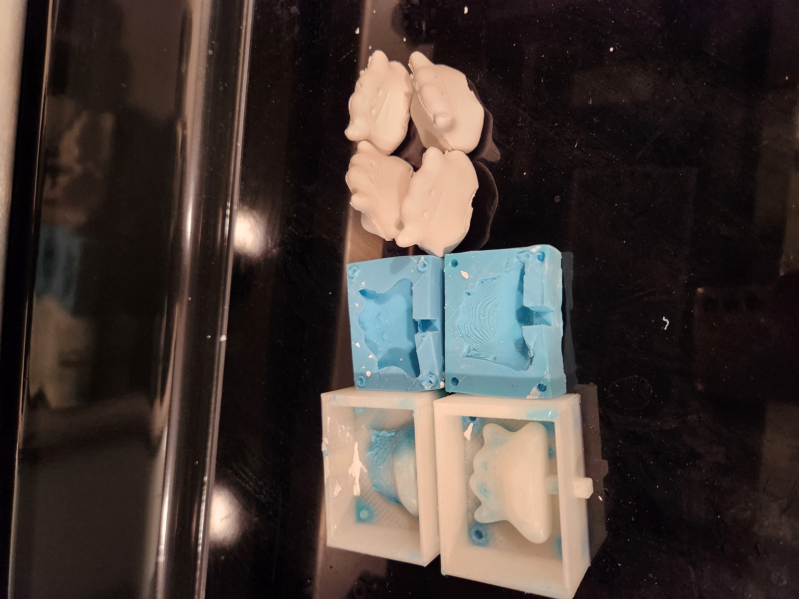

As continuation of last week, my next task is to use my molds-for-mold to create the 2 part molds. As a refresher, here's how my 3d-printed molds-for-molds turned out.
When the 3d-printed molds for molds were ready, I was ready for the oomoo for the actual 2-part molds. I had the oomoo 30 already, but my Part A was completely solid so I could not use it. I went out and bought the oomoo 25 from the Artists Craftsman supply.
For my first try, I poured the oomoo 25 into separate cups and combined into a new cup. However, I must have poured in more Part B. It was not drying well in the molds even after around 3 hours. It was messy to fish out all the residue. I tried again and ensured I had more Part A in than last time. Doing this made the molds dry well and I was able to take out the molds out of the 3d printed molds with no issue after 75 minutes or so.
Then it was time to mix water with hydrostone. This part was hard to get the right amount of water and hydrostone. All 4 tries I had more water than I wanted so I ended up wasting some hydrostone. Since I had only the one 2-part mold, I had no choice but to wait for the batch to be done for my next one. My molds were small enough for me to get through all 4 casts in.
Here are some things I would do differently if I did it over again: 1) I would make more space between the mold and the highest positive point of what I'm trying to create. I ended up having to use tape to make sure the mold doesn't tear. 2) I would try to get measuring cups or a scale so I don't waste any oomoo or hydrostone.
Source files
Acknowledgement--thanks everyone!